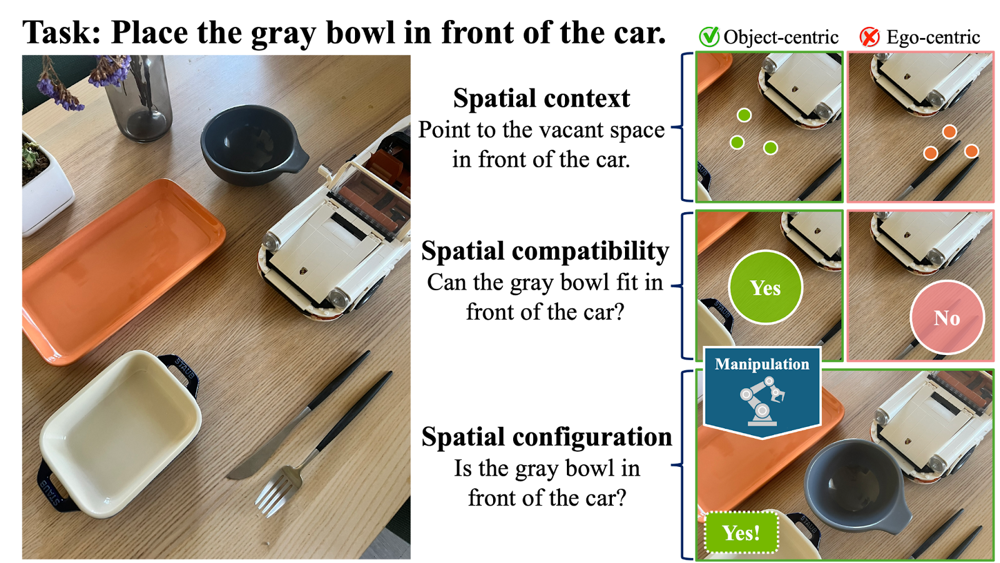
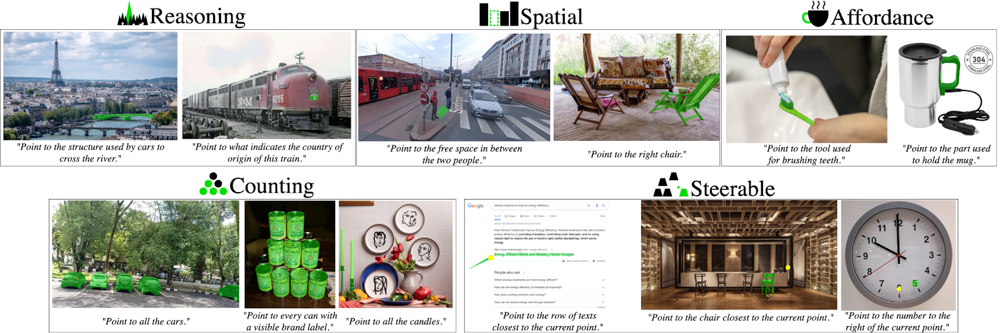

Introduction
Embodied reasoning—the ability to ground perception, language, and action in the physical world—is becoming
central to robotic manipulation. Foundation models (LLMs, VLMs, and 3D vision models) bring broad world knowledge
and compositional generalization, yet turning these capabilities into reliable, closed‑loop manipulation remains
an open challenge: robots must reason about spatial relations, affordances, dynamics, and causality while adapting
online to novel scenes, objects, and tasks. This workshop convenes researchers across robotics, embodied AI,
perception, planning, control, simulation, and sim‑to‑real to chart the next steps in reasoning‑centric manipulation.
We introduce two community challenges to benchmark progress: RoboSpatial, evaluates a model's ability to understand
spatial relationships—where to point, fit, and place—across different camera views and scenes, and PointArena (Point‑Bench),
Measures precise, language‑guided pointing by asking models to select the correct pixel(s) in an image with automated scoring.
Together, these tracks measure generalization across viewpoints, sensors, and object sets; robustness to environmental
perturbations; and the fidelity of language‑to‑action grounding.
By bringing together diverse perspectives—from algorithmic foundations and datasets to hardware‑aware systems and
deployments—we aim to identify what forms of representation, learning, and planning truly scale embodied reasoning
for real‑world manipulation, and to catalyze collaboration between academia and industry.
Challenges
We are excited to announce the challenges for the ERA workshop.
RoboSpatial Challenge
RoboSpatial evaluates a model’s embodied spatial reasoning by testing its ability to infer where to point, fit, and place from real-world RGB-D observations. It contains 350 spatial question–answer pairs collected across five real apartments, with both RGB and depth data captured using an iPhone 13 Pro Max. Each scene is annotated under three reasoning types: configuration (object relations), context (free-space reasoning), and compatibility (affordance and fit). By assessing how models interpret 3D spatial structure and generalize across diverse indoor scenes and viewpoints, RoboSpatial provides a diagnostic benchmark for grounding perception and language in actionable spatial understanding, and is increasingly adopted by frontier models such as Qwen3-VL and Gemini Robotics for evaluating embodied spatial reasoning.
PointArena Challenge
Colosseum aims to evaluate models' generalization across various scene perturbations. It encompasses 14 perturbation factors within 20 distinct RLBench tasks, categorized into three tiers (simple, intermediate, and complex) according to the number of way-points involved (task horizon). Collectively, Colosseum presents 20,371 unique task perturbations instances.
Important Dates
| Event | Date |
|---|---|
| Challenges | TBD |
| Submission Deadline | TBD |
| Notification | TBD |
| Camera-Ready | TBD |
Submission Guidelines
- Page Limit: Submissions can be up to 4 pages for the main content. There is no limit on the number of pages for references or appendices.
- Formatting: Submissions are encouraged to use the CVPR template.
- Anonymity: All submissions must be anonymized. Please remove any author names, affiliations, or identifying information.
- Relevant Work: We welcome references to recently published, relevant work (e.g., RSS, CoRL, ICRA, and ICML).
- Archival Status: All accepted papers are non-archival.
- Link: openreview submission
Accepted papers will be presented in the form of posters at the workshop. In addition, selected papers may be invited to deliver spotlight talks.
Paper topics
A non-exhaustive list of relevant topics:
- 3D Vision-Language Policy Learning
- Pretraining for 3D Vision-Language Models
- 3D Representations for Policy Learning (i.e. NeRF, Gaussian Splatting, SDF)
- 3D Benchmarks and Simulatotion frameworks
- 3D Vision-Language Action Models
- 3D Vision-Language or Large-Language Models for Robotics
- 3D Instruction-tuning datasets for Robotics
- 3D pretraining datasets for Robotics
- Other topics about 3D Vision-Language Models for Robotic Manipulations
Workshop Schedule (Tentative)
| Start Time (CDT) | End Time (CDT) | Event |
|---|---|---|
| 9:00 AM | 9:10 AM | Opening remarks |
| 9:10 AM | 9:45 AM | Hao Su Exploring World Model for Robotic Manipulation |
| 9:45 AM | 10:20 AM | Chelsea Finn Pretraining and Posttraining Robotic Foundation Models |
| 10:20 AM | 10:55 AM | Ranjay Krishna Preparing perception for robotics |
| 10:55 AM | 11:10 AM | Coffee Break |
| 11:10 AM | 11:45 AM | Yunzhu Li Foundation Models for Structured Scene Modeling in Robotic Manipulation |
| 11:45 AM | 12:20 PM | Katerina Fragkiada 3D Generative Manipulation Policies: Bridging 2D Pre-training with 3D Scene Reasoning |
| 12:20 PM | 1:30 PM | Lunch |
| 1:30 PM | 2:00 PM | Poster Session (ExHall D, #357-#371 |
| 2:00 PM | 2:35 PM | Angel Chang Building vision-language maps for embodied AI |
| 2:35 PM | 3:10 PM | Dieter Fox Hierarchical Action Models for Open-World 3D Policies |
| 3:10 PM | 3:25 PM | Coffee Break |
| 3:25 PM | 4:00 PM | Chuang Gan Genesis: An Unified and Generative Physics Simulation for Robotics |
| 4:00 PM | 4:45 PM |
Spotlight Paper Talks (5 min talk / 2 min Q&A) • The One RING: A Robotic Indoor Navigation Generalist • Manual2Skill: Learning to Read Manuals and Acquire Robotic Skills for Furniture Assembly Using Vision-Language Models • Agentic Language-Grounded Adaptive Robotic Assembly • ZeroMimic: Distilling Robotic Manipulation Skills from Web Videos |
| 4:45 PM | 5:00 PM | Ending Remarks and Paper Awards |
Invited Speakers
listed alphabetically


Organizers


For inquiries, contact us at: robo-3dvlm@googlegroups.com